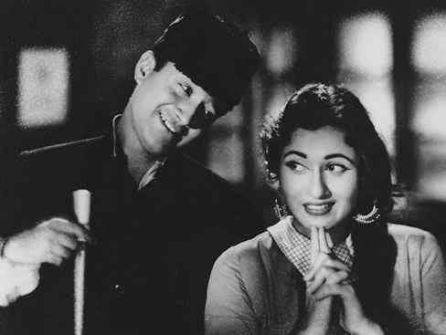

Profiles A-Z

Akhtari (1940s)
Ambika Johar (1970s)
Arti (1950s)
Azad Irani (Late 1950s – 1970s)
Dina (1970s)
Emmy Minwala (1950s - 1970s)
Ghazala (1960s - 1970s)
Greta Bacarro (1940s - 1950s)
Gul Hamid (1930s)
Gulshan Ara (1950s)
Hamida Bano (1940s – 1950s)
Heera Sawant (1940s – 1960s)
Hiralal (1920s – 1980s)
Indira Devi (1950s)
Kafira (1950s - 1960s)
Kate Sethi (1950s)
Kumud Chhugani (1960s - 1970s)
Latika (1940s)
Madhubala (1940s - 1960s)
Meena Fernandez (1950s)
Meera Misra (Late 1940s - Early 1950s)
Mubarak Begum (1940s - 1960s)
Munawwar Sultana (1940s - 1960s)
Nasreen (1950s - 1960s)
Nazneen (1970s - 1980s)
Pompi (1970s)
Poonam (1950s - 1960s)
Rajni (1950s - 1960s)
Ramola (1930s - 1950s)
Roshan (1960s - 1970s)
Shad (1950s)
Shahina (1950s – 1960s)
Shanti Madhok (1940 - 1950s)
Sheela Kashmiri (1950s – 1960s)
Sheila Ramani (1950s – 1960s)
Shola (1950s – 1960s)
Sofia (Late 1930s to 1940s)
Sofia Bano (1960s - 1970s)
Suresh (1930s - 1980s)
Sybil (1950s)
Veera (1940s - 1950s)
Venus Banerjee (1950s)
Vijay Kumar (1950s)